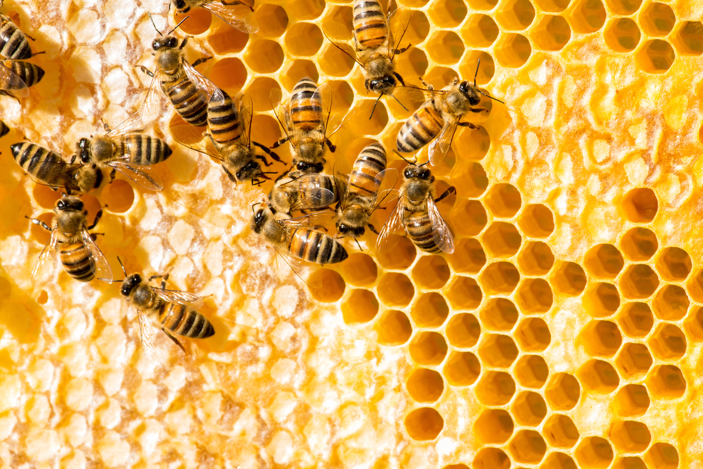
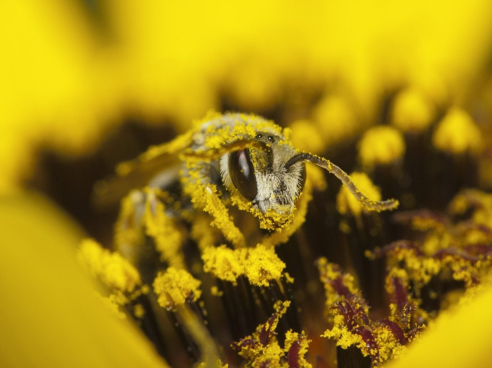
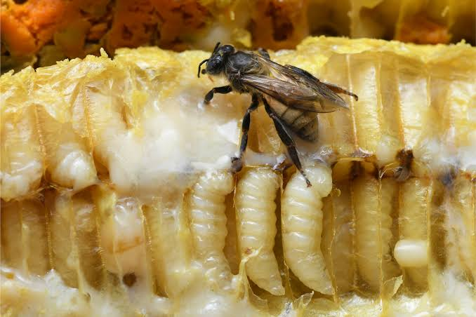

Products

Honeycombs
Honeycombs are made of beeswax made into a hexagonal pattern. Bees use hexagons to minimise the amount of beeswax needed while maximising the space inside to store things such as honey, pollen, and larvae. The more sides a 2D shape has, the more area it will have for the same total side length. Circles have infinite sides but they can't be used because they don't tessellate. Making the honeycomb out of one single shape makes it more simple and easy for the bees, out of the three regular polygons that tessellate (triangles, squares, & hexagons), hexagons have the most amount of sides, meaning that they are the most efficient. Honeycombs are what makes up beehives.
Honey
Bees create honey by collecting nectar from flowers with their straw-like tongues called proboscises, storing the nectar in their specialised honey stomachs. The bees that collect the nectar from flowers are called forager bees. In the honey stomach, enzymes break down the complex sugars such as sucrose into simple ones such as glucose and fructose, this is to prevent the honey from crystallising. Once the forager bee collects enough nectar, it will return to the hive and transfer the nectar to a house bee if it approves. The house bee will then deposit the nectar in a hexagonal beeswax cell. Worker bees will then transform the nectar into honey by chewing it for around half an hour before passing it to another bee who will do the same. As the nectar is mixed with enzymes, its pH increases and its chemical properties change.

At this stage the honey contains 70% water, which is too high, so they smear the honey on the honeycomb cell walls and fan it with their wings to help it evaporate. Once the honey reaches 17%-20% water content, the bees will cap off the cells with scaly beeswax.
Pollen
While honey provides bees with the carbohydrates and glucose they need to create energy, their other food, pollen, provides them with protein, fats, vitamins, and minerals which are just as essential. Pollen is collected by worker bees who store it in the hive, often mixing it with nectar to create bee bread, their main protein source.

Bees use their fuzzy bodies and an electrostatic force to collect pollen on themself, which they then scrape off and place into pollen baskets (corbiculae) on their hind legs, where the pollen is compacted into pellets. After returning, the worker bee stores the pollen at the hive, in honeycomb cells.
Offspring
The queen bee lays eggs in individual wax cells in the honeycomb of the beehive, where they stay until hatching into larvae 3-6 days later. Larvae are small, white, legless, and blind. For the first three days, all larvae are fed royal jelly secreted by young worker bees, aged from 5-15 days, from their hypopharyngeal and mandibular glands.

After this, larvae that continue to be fed royal jelly become queen larvae and the remaining worker larvae consume a mix of royal jelly, honey, and bee bread. During this stage, larvae will molt four times over six days before spinning themself into a cocoon and entering the pupal stage. Worker bees seal the cell while the pupae undergo metamorphosis, which takes 16 days for queens and 12 for the rest. After emerging the bee will be pale and soft, but will quickly harden and darken, developing adult structures.